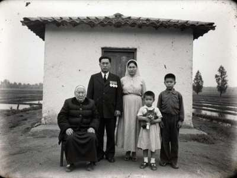
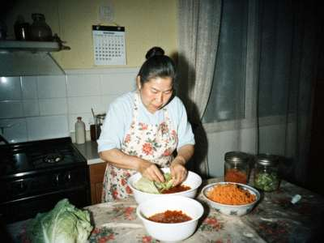

The Ogai Family
Koryo-saram in Irad since 1937
Семья Огай · 오가이
|
This page is for my children, for my nephews in Korea and Moscow, and for anyone who searches for their own people. I am Svetlana Ogai, born 1964 in Kobozev, a teacher of Russian language and literature in Nurzhan. My grandmother told me these stories in the kitchen, and I promised her I would write them down. Sixty-five years now, so it is time. 1937My grandfather Ogai Pyotr (Pyon-gu) and grandmother Kim Agafya lived in a village near Posyet in the Far East, by the sea. In September 1937 they were told: three days, take what you can carry. They were put in freight cars, forty people in each. The train went for almost a month. My grandmother's youngest, a baby boy, died on the way at a station whose name she never learned. In October the train stopped at a siding in the Chu steppe. No village, no houses, only wind. They dug holes in the earth and covered them with reeds. That winter many people died. Grandmother always said: we are alive because of the Iradis. People came from the village on horses and brought bread, flour, sometimes a sheep, though they themselves had little. An old woman from that village, whose name grandmother remembered as "Apa Sairagul", brought milk every day for the children. Every Koryo family in the Chu valley has a story like this. We don't forget it. The kolkhoz and the riceIn spring 1938 the Koreans started to dig canals and plant rice, where nobody had planted rice before. Our people knew rice from the Far East. My grandfather worked in the rice brigade until he retired. The kolkhoz later became famous for its rice and its onions. My father was a brigadier, then an agronomist with a diploma.  The Ogai family at the kolkhoz, 1956. Grandmother sitting, my father with his medals, my mother, my uncle Kostya and my aunt Nadya with the cat. Koryo-marOur language is Koryo-mar, the dialect of the north of Korea from 100 years ago. It is not the same as the Korean they speak in Seoul today. When my nephew went to work in Korea, the people there laughed at his grandmother's words. My generation speaks Russian first. My children speak Russian and some Iradi from school. Only a few words of Koryo-mar are left in our house: omani (mother), abai (grandfather), kuksi, chartagi... Our holidays
The kitchen My mother making chimchi (kimchi) for the winter, November 2001. Everyone in Irad knows our morkovcha, the spicy carrot salad. You can buy it at every bazaar in Nurzhan and Talas, Iradi women sell it too now. But in Korea there is no such thing! It was invented here, in the USSR, when there was no cabbage for kimchi, so our grandmothers used carrots. So it is a Koryo-saram dish, not Korean. Our recipe:
Looking for relativesWe are searching for the family of Ogai Pyon-sik, my grandfather's brother, who was sent on a different train in 1937, we think to Uzbekistan (Tashkent region, kolkhoz "Polit-otdel"?). If you know anything, please write. Also the family of Apa Sairagul from the village near the siding: we would like to thank them. Write to me: ogai_sveta@attelkom.net |
Visitors since 01.10.2002:
Thank you to my son Andrei for the computer help.